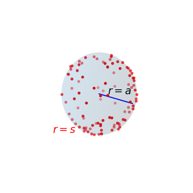

Ideal measurement devices

The perfect monitor is permeable to ligand molecules and estimates concentration by counting the molecules in its volume during time T .
The perfect absorber estimates the ligand concentration from the number of molecules incident on its surface during time T
Patchy receptors
Path of a diffusing molecule that touches the surface of a cell at a sequence of points A, B, . . . F.
The cell has radius $a$. The receptor patches, shown shaded, are of radius $s$.
A and B constitute independent tries at hitting a patch, but C and D do not.
Note between A and B the excursion of distances perpendicular to the surface of the sphere.
Patchy receptor calculations
The probability $P$, that a molecule now located a distance $s$ from the sphere of radius $a$ will hit the surface of the sphere at least once before escaping to infinity is equivalent to the ``capture probability'' which we now rewrite as:
\[ P_s = \frac{a}{a+s} \]
The probability that a molecule now at $r = a + s$ will execute exactly $n$ excursions to the surface, separated by reappearances at $r = a + s$ and followed by diffusion to infinity, is $P_s^n(1-P_s)$. The average number of excursions is:
\[ \bar{n} = \sum_{n=0}^\infty n P_s^n (1-P_s) = \frac{P_s}{1-P_s}=\frac{a}{s} \]
Patchy receptor calculations
The probability of not hitting a receptor patch in a single random encounter is $\beta = 1-(Ns^2/4a^2)$.
If the contacts we have enumerated are independent tries, the probability that a molecule starting at $r = a + s$ survives all subsequent contacts until it escapes to infinity is:
\begin{align*}
P_{esc} = \sum_{n=0}^\infty \beta^n P_s^n (1-P_s) &=\frac{1-P_s}{1-\beta P_s}\\
&= \frac{4a}{4a+N_s}
\end{align*}
Since $1-P_{esc}$ is the fraction of all arriving molecules that ultimately are captured, we have the resulting current:
\begin{align*}
\frac{J}{J_{max}}=\frac{Ns}{4a+Ns}
\end{align*}
Understanding diffusive flux by solving the diffusion equation

Consider a spherical cell of radius $a$ immersed in an unbounded medium.
The medium contains in low concentration some molecules with diffusion constant $D$.
The local concentration, $c(\boldsymbol{x},t)$ will be expressed in molecules per unit volume.
The spatial and temporal variation of $c(\boldsymbol{x},t)$ is governed by the diffusion equation
\begin{align}
D\nabla^2 c = \frac{\partial c}{\partial t}
\end{align}
In steady state, the current $I$ of molecules to the cell, in molecules per second, is given by the product of surface area $4 \pi a^2$ and the flux, $J$, from Fick's First Law:
\begin{align}
I=4 \pi a D c_\infty
\end{align}
where $c_\infty$ is the concentration far from the cell.
Using electrostatics to solve diffusion problems
Laplace's Equation for charge-free space
\begin{align*}
\nabla^2 \phi = 0
\end{align*}
Electric field vector
\begin{align*}
\boldsymbol{E} = \boldsymbol{\nabla}\phi
\end{align*}
Total electric charge $Q$ on a\\surface:
\begin{align*}
Q=\frac{1}{4\pi}\int_S E \cdot d \boldsymbol{s}
\end{align*}
Time-independent diffusion equation:
\begin{align*}
\nabla^2 c = 0
\end{align*}
Diffusive current density:
\begin{align*}
\boldsymbol{J} = -D \boldsymbol{\nabla}c
\end{align*}
Total diffusive current entering closed surface:
\begin{align*}
I=\int_S \boldsymbol{J} \cdot d \boldsymbol{s}
\end{align*}
$I=4 \pi C D c_\infty$ where $C$ is the electrical capacitance of an object in cgs units
Counting molecules using a patchy sphere

TEXT
Counting molecules using a patchy sphere
Capacitance of a sphere $r=a$:
\begin{align*}
C=a
\end{align*}
Total flux to sphere:
\begin{align*}
I = 4 \pi D a c_\infty
\end{align*}
Capacitance of a thin disk $r=s$:
\begin{align*}
C=2s/\pi
\end{align*}
Total flux to thin disk:
\begin{align*}
I = 8 D s c_\infty
\end{align*}
Counting molecules using a patchy sphere
Capacitance of an insulating sphere, $r=a$, with $N$ conducting patches of radius $s$:
\begin{align*}
C=\frac{Nsa}{Ns + \pi a}
\end{align*}
Flux to the patchy sphere:
\begin{align*}
I &= 4 \pi D c_\infty \frac{Nsa}{Ns + \pi a}\\
&= I_{max}\frac{Ns}{Ns + \pi a}
\end{align*}
When is current half maximal?
\begin{align*}
I\left(N=\frac{\pi a}{s}\right)=\frac{1}{2}
\end{align*}
TITLE
Time-averaged occupancy of a receptor is given by a single dissociation constant, $K$
In equilibrium at concentration $c$, the expected average occupancy is:
\[ \left< p \right> =\frac{c}{c+c_{1/2}} \]
Law of Mass Action
\begin{align*}
R + L \leftrightarrow R \cdot L
\end{align*}
\begin{align*}
\frac{d[R \cdot L]}{dt} = k_{on}[R][L] - k_{off}[R \cdot L]
\end{align*}
\begin{align*}
\bar{p} &= \frac{[R \cdot L]}{[R] + [R \cdot L]}\\
&= \frac{[L]}{[L] + k_{off}/k_{on}}
\end{align*}
An entropic view of receptor occupancy
Physics of the unbound state
Energy $ = L\varepsilon_{sol}$
Multiplicity $ = \frac{\Omega!}{L!(\Omega - L )!} \approx \frac{\Omega^L}{L!}$
Weight $= \frac{\Omega^L}{L!}e^{-\beta L\varepsilon_{sol}}$
Physics of the bound state
Energy $ = (L-1)\varepsilon_{sol}+\varepsilon_b$
Multiplicity $ = \frac{\Omega!}{(L-1)!(\Omega - L +1 )!} \approx \frac{\Omega^{L-1}}{(L-1)!}$
Weight $= \frac{\Omega^{L-1}}{(L-1)!}e^{-\beta[(L-1)\varepsilon_{sol}+\varepsilon_b]}$
Entropic view of receptor occupancy
The probability of binding is the weight of the bound states divided by the sum of the weights of the bound and unbound states:
\begin{align*}
\bar{p} = \frac{\frac{\Omega^{L-1}}{(L-1)!}e^{-\beta[(L-1)\varepsilon_{sol}+\varepsilon_b]}}{\frac{\Omega^{L-1}}{(L-1)!}e^{-\beta[(L-1)\varepsilon_{sol}+\varepsilon_b]} + \frac{\Omega^L}{L!}e^{-\beta L\varepsilon_{sol}}}
\end{align*}
Multiply top and bottom by $(L!/\Omega^L)e^{\beta L \varepsilon_{sol}}$:
\begin{align*}
\bar{p} = \frac{(L/\Omega)e^{-\beta \Delta \varepsilon}}{1 + (L/\Omega)e^{-\beta \Delta \varepsilon}}
\end{align*}
where $\Delta \varepsilon = \varepsilon_b - \varepsilon_{sol}$.
The overall volume of the box is $V_{box}$, so we can write ligand concentration as $c=L/\Omega V_{box}$. This results in:
\begin{align*}
\bar{p} = \frac{(c/c_0)e^{-\beta \Delta \varepsilon}}{1+ (c/c_0)e^{-\beta \Delta \varepsilon}}
\end{align*}
where $c_0=1/V_{box}$.
Entropic view of receptor occupancy
Receptor occupancy over time
An attached molecule has a constant probability per unit time of detaching.
If the probability of detachment in $dt$ is $dt/\tau_b$, the mean occupancy time is $\tau_b$
If an empty receptor is an adsorber, the current to it is $4Dsc$.
At steady state:
\begin{align*}
\bar{p}/\tau_b = 4(1-\bar{p})Dsc
\end{align*}
Since $\bar{p}=1/2$ when $c=c_{1/2}$
\begin{align*}
\tau_b=(4Dsc_{1/2})^{-1}
\end{align*}
Entropic view of receptor occupancy
Receptor occupancy over time
If the only information about $c$ is the function $p(t)$ for one receptor recorded for a time $T$, the cell can extract this information by forming its average:
\begin{align*}
p_T = \frac{1}{T}\int_{t_1}^{t_1+T} p(t)dt
\end{align*}
If $p_T$ is taken as the $\bar{p}$, it can be used to derive $c$:
\begin{align*}
c/c_{1/2} = p_T/(1-p_T)
\end{align*}
Fractional error in measuring concentration is related to mean and variance in receptor occupancy:
\begin{align*}
\frac{\delta c}{c}=\frac{\delta \bar{p}}{\bar{p}(1-\bar{p})}
\end{align*}
Variance in measurements of $\bar{p}$ can be computed from the autocorrelation function of $p(t)$
\begin{align*}
G(\tau) = \left< p(t)p(t+\tau) \right>
\end{align*}
The autocorrelation function of receptor occupancy
Receptor occupancy over time
$p_T$ is the average over the observation time:
\begin{align*}
p_T = \frac{1}{T}\int_{t_1}^{t_1+T} p(t)dt
\end{align*}
A useful tool is the autocorrelation function of $p(t)$:
\begin{align*}
G(\tau) = \left< p(t)p(t+\tau) \right>
\end{align*}
$G(\tau)$ is an even function of $\tau$: $G(\tau)=G(-\tau)$
From the definition of $p_T$
\begin{align*}
p_T^2=\frac{1}{T^2}\int_{t_1}^{t_1+T}dt'\int_{t_1}^{t_1+T}p(t)p(t')dt
\end{align*}
Introducing the autocorrelation function, we obtain:
\begin{align*}
\left< p_T^2 \right> = \frac{1}{T^2}\int_{0}^{T}dt'\int_{0}^{T}G(t'-t)dt
\end{align*}
The autocorrelation function of receptor occupancy
Receptor occupancy over time
$p_T$ is the average over the observation time:
\begin{align*}
p_T = \frac{1}{T}\int_{t_1}^{t_1+T} p(t)dt
\end{align*}
Consider a large number $n$ pairs of observations, one at $t$ the other at $t+\tau$.
Segregate the pairs in which the first observation is bound, i.e., $p(t)=1$.
$G(\tau)$ is an even function of $\tau$: $G(\tau)=G(-\tau)$
• If $n$ is large, there will be $\sim n\bar{p}$ pairs
• The number with $p(t+\tau)=1$ will be $nG(\tau)$
• Only for ``1,1'' pairs, $p(t)p(t+\tau) \neq 0$
The autocorrelation function of receptor occupancy
Receptor occupancy over time
$p_T$ is the average over the observation time:
\begin{align*}
p_T = \frac{1}{T}\int_{t_1}^{t_1+T} p(t)dt
\end{align*}
Shift the time of the second observation from $t+\tau$ to $t+\tau + d\tau$
• Some ``1,1'' pairs become ``1,0'' pairs:
$ nG d\tau/\tau_b $
• Some ``1,0'' pairs become ``1,1'' pairs:
$ n(\bar{p}-G)[\bar{p}/(1-\bar{p})]d\tau/\tau_b $
The autocorrelation function of receptor occupancy
Receptor occupancy over time
$p_T$ is the average over the observation time:
\begin{align*}
p_T = \frac{1}{T}\int_{t_1}^{t_1+T} p(t)dt
\end{align*}
We should now have $nG(\tau + d\tau)$ ``1,1'' pairs, which requires:
\[ dG = -G d\tau/\tau_b + (\bar{p}-G)[\bar{p}/(1-\bar{p})]d\tau/\tau_b \]
Integrating and requiring that $G(0) = \bar{p}$
\[ G(\tau) = \bar{p}^2 + \bar{p}(1-\bar{p})\exp{\left[ -\frac{\lvert \tau \rvert}{(1-\bar{p})\tau_b}\right]} \]
Assuming $T \gg \tau_b$:
\[ \left< p_T^2 \right> - \left< p_T \right>^2 = \frac{2\bar{p}(1-\bar{p})^2\tau_b}{T} \]
For the rms error in $\bar{c}$ we get
\[ \frac{\Delta c_{rms}}{\bar{c}} = \sqrt{\frac{2\tau_b}{T\bar{p}}} = \sqrt{\frac{2}{\nu}}\]
where $\nu = 4Ds\bar{c}(1-\bar{p})T$